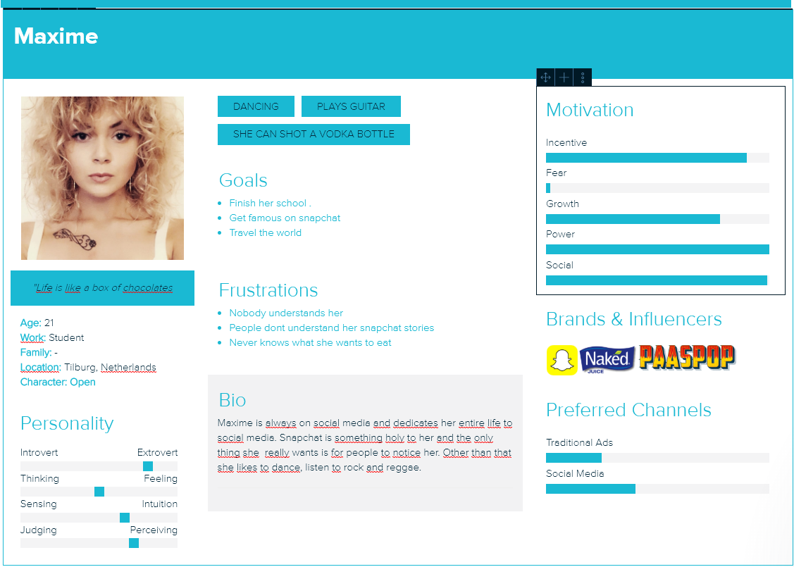
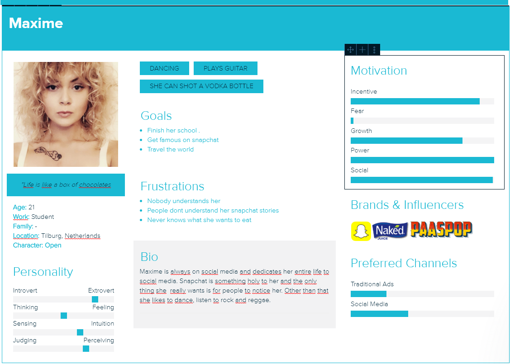

Customer Journey
Eerste Iteratie
In de laatste week van sprint 2 zijn we begonnen met de customer journey. Hierin hebben we de persona’s wel mee genomen maar het was eigenlijk nog te onpersoonlijk en ongeloofwaardig. Hieronder zie je de eerste versie.
Posters: Aandacht: Posters hangen in de buurt van concertzalen & kroegen
AR-posters: Afweging: als mensen dusdanig onder de indruk zijn van de poster en je duidelijk maakt dat het meer is dan alleen de poster, dan gaan mensen de AR-functie gebruiken.
Website: Actie
Social Media: Actie/altijd
We zorgen dat de posters worden opgehangen op plekken waar de doelgroep komt en ook geïnteresseerd is om meer te weten te komen. Stel Maxime loopt langs de poster en wordt aangetrokken door de poster. Dan kijkt ze naar de poster en onthoud
de naam en misschien wel de social media links. Als ze daardoor geïnteresseerd is gaat ze misschien ook de poster scannen. Op het moment dat ze de poster scant krijgt ze meteen een verdere introductie van de band. Ze krijgt meteen de muziek
te horen.
Tweede Iteratie
We hebben als feedback gekregen om in de Persona’s te duiken en zorgen dat ze persoonlijker worden. Verder heeft Jeroen met ons gesproken en aangeboden om een customer journey template te sturen. Dit template gebruikt Jeroen en zijn bedrijf (Stratego Branding) zelf ook altijd. We hebben hiernaar gekeken maar het bleek voor ons op dit moment nog te lastig. Ik werd zelf erg ingesloten in dit template en raakte erg verward wat de customer journey ook alweer precies was. Uiteindelijk hebben we besloten om het template niet meer te gebruiken. We hebben nu voor Peter en voor Edwin een aparte customer journey gemaakt. Want ze leven allebei een ander leven dus komen ze allebei op andere momenten in aanraking met de Nachtwakers. Ik heb eerst de customer journey van Peter gedetailleerd uitgeschreven. Vervolgens heb ik een visual gemaakt voor Peter en Edwin. Deze heb ik in een InDesign document verwerkt.


 
